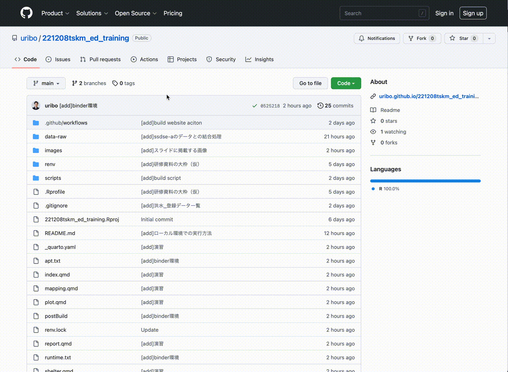

高等学校情報科におけるR言語の活用
概要
このページは、令和4年度（2022年度）徳島県教科「情報」指導者研修のための資料です。 R言語によるプログラミングを通し、教科「情報」で扱われるいくつかの単元の内容を学びます。 具体的には、「プログラミング」、「データの可視化」、「オープンデータの活用」を扱います。 またQuartoを使ったレポート作成についても解説します。
研修の進め方
研修内容はこのウェブページ上またはスライドから閲覧可能です。 研修を通してR言語によるプログラミングを行います。
R言語の実行環境は各自のコンピュータ上に構築していただくことが望ましいですが、 当日の研修ではbinderを利用します。binderはウェブブラウザ上で実行可能なRの環境を提供します。以下のボタンをクリックまたはURLから直接リンクいただくことでbinderが起動します。 そのまましばらく待つとRStudio (Server)の画面に切り替わるので、そこからRを操作します。

https://mybinder.org/v2/gh/uribo/221208tskm_ed_training/main?urlpath=rstudio

この研修ではR言語についての詳しい解説をしませんが、代わりに参考資料を掲載します。Rの操作で不明な点に遭遇した、詳しくRを知りたい場合に適宜参考にしてください。
講師
- 瓜生真也 - 徳島大学デザイン型AI教育研究センター・助教
ライセンス
この資料はクリエイティブ・コモンズ 表示 - 非営利 - 継承 4.0 国際 (CC BY-NC-SA 4.0) ライセンスの下に提供しています。ただし、資料中のコード部分はMITライセンスの下に提供します。
本資料では次のオープンデータを利用します。
- SSDSE-市区町村 https://www.nstac.go.jp/use/literacy/ssdse/ 独立行政法人統計センター
- SSDSE-県別推移 https://www.nstac.go.jp/use/literacy/ssdse/ 独立行政法人統計センター
- 緊急避難場所 (徳島県) https://opendata.pref.tokushima.lg.jp/dataset/487.html 徳島県オープンデータポータルサイト - クリエイティブ・コモンズ 表示 4.0 国際
- Natural Earth https://www.naturalearthdata.com - パブリックドメイン
参考資料
- 馬場真哉 (2019). 「R言語ではじめるプログラミングとデータ分析」ソシム ISBN: 978-4-8026-1238-8
- 松村優哉、湯谷啓明、紀ノ定保礼、前田和寛 (2021). 「RユーザのためのRStudio[実践]入門」技術評論社 ISBN: 978-4-297-12170-9
- Hadley Wickham、Garrett Grolemund 著、黒川利明 訳、大橋真也 技術監修 (2017). 「Rではじめるデータサイエンス（R for Data Science）」オライリー・ジャパン ISBN: 978-4-87311-814-7 https://r4ds.had.co.nz
- 石田基広 (2012). 「Rで学ぶデータ・プログラミング入門: RStudioを活用する」共立出版 ISBN: 978-4-320-11029-8
- Jaehyun Song、Yuki Yanai. 「私たちのR: ベストプラクティスの探究 」 https://www.jaysong.net/RBook/
- R言語入門
研修の日程
2022-12-08@online
内容に関する質問、指摘
改善のためにコメント等をいただけると幸いです。 コメントはGitHub issuesから投稿をお願いします。